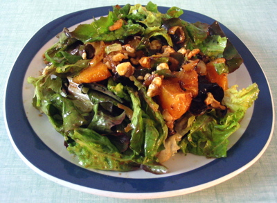

Tarbes Salad

Description
Tarbes salad is a sweet and sour salad that is both tasty and easy to make.
Ingredients
Salad
- 1 white or yellow onion
- 1 tablespoon olive oil
- ½ head your favorite lettuce
- About 5 walnuts, broken into bits
- 1 ripe orange, cut into small pieces
- Small chunk of hard blue or Roquefort cheese, diced
Dressing
- 50 ml extra-virgin olive oil
- 25 ml balsamic vinegar
- 1 teaspoon whole grain mustard
- 1 squirt of lemon juice
- Salt
- Pepper to taste
Procedure
- Cut the onion into half moons and brown it in a bit of olive oil. Make it nice and crispy. Once it's done, put it aside in a bowl and squirt a bit of lemon juice on it.
- As the onion is cooking, wash the lettuce thoroughly. Soak it several times. Nothing is worse than gritty lettuce in a salad. Break the lettuce into bite-size pieces and drop them in your spinner under running water. Once it's washed, spin it until it's dry. Wet lettuce will dilute the dressing.
- Once the lettuce is dry, put it in a bowl. Add the onions, walnuts, orange and cheese.
- To make the dressing, just mix the ingredients in a jar and give them a good shake.
- Toss everything together in a big bowl and serve.